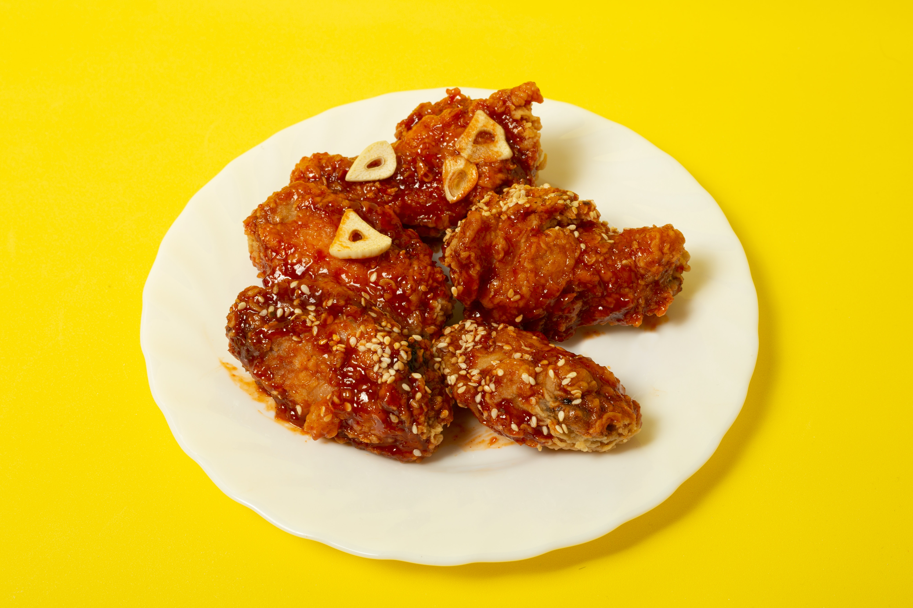

Honey Garlic Chicken
This simple recipe makes a crisp-tender chicken with a perfect, sticky glaze.

Ingredients
- 6 chicken thighs, bone in or out, with or without skin*
- Salt and pepper, to season
- 2 teaspoons garlic powder, to season
- 6 cloves garlic, crushed
- 1/3 cup honey
- 1/4 cup water (or chicken broth)
- 2 tablespoons rice wine vinegar (or apple cider vinegar, or any white vinegar)
- 1 tablespoon soy sauce
METHOD
- Season chicken with salt, pepper and garlic powder; set aside.
- Heat a pan or skillet over medium high heat; sear chicken thigh fillets or breast fillets on both sides until golden and cooked through.
FOR BONE IN THIGHS:
- Reduce heat after searing on both sides, cover skillet with a lid and continue cooking until the chicken is cooked through, while turning every 5 minutes until done. Alternatively, see notes for oven method.
- Drain most of the excess oil from the pan, leaving about 2 tablespoons of pan juiced for added flavour.
FOR SAUCE:
- When chicken is done and cooked through, arrange chicken skin-side up in the pan (if cooking with skin); add the garlic between the chicken and fry until fragrant (about 30 seconds). Add the honey, water, vinegar and soy sauce. Increase heat to medium-high and continue to cook until the sauce reduces down and thicken slightly (about 3-4 minutes).
- Garnish with parsley and serve over vegetables, rice, pasta or with a salad.